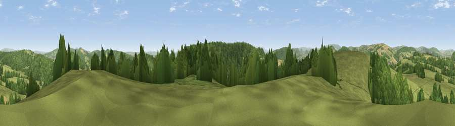

The Camp
#9504 in England · top 25% of its area beats it · near LingenThe view, rendered

A 360° render of this exact spot computed from the terrain model, tree cover and land cover — summer colours, afternoon light, calibrated against photographs of famous viewpoints. Real trees, hedges and buildings will differ in detail.
The panorama
Grey silhouette: terrain skyline in each direction (720 bearings, Earth curvature and refraction included). Dashed green: skyline with trees (+15 m) and buildings (+8 m) as obstacles. Blue strip: how far the ground is visible on each bearing.
Where the view opens
Wedge length = distance to the farthest visible ground on that bearing (vegetation-aware). Rings at 10, 25 and 50 km.
What fills the view
50% woodland · 44% grassland · 6% cropland
Angular shares of the visible panorama (visual magnitude), not map area. Landscape diversity 0.39 (0–1 Shannon).
Key numbers
More beautiful places nearby
The staircase of upgrades: each row has a higher view potential than everything closer. Driving times are estimates from straight-line distance, calibrated against real road routing — check an actual route before setting out.
| Place | Direction | Drive | Score |
|---|---|---|---|
| Viewpoint near Lingen | W · 1 km | ~2 min | 69.0 |
| Viewpoint near Shobdon | SSW · 3 km | ~6 min | 77.9 |
| Viewpoint near Leinthall Starkes | ENE · 6 km | ~13 min | 80.3 |
| Gatley Hill | ENE · 7 km | ~14 min | 82.6 |
| Viewpoint near Asterton | N · 22 km | ~37 min | 83.0 |
| Titterstone Clee | ENE · 23 km | ~39 min | 83.8 |
| The Lawley | NNE · 33 km | ~51 min | 85.8 |
| North Hill | ESE · 43 km | ~63 min | 86.8 |
52.29195, -2.89975 · source: dobih hill · position refined by local search. Computed location — check access rights before visiting.